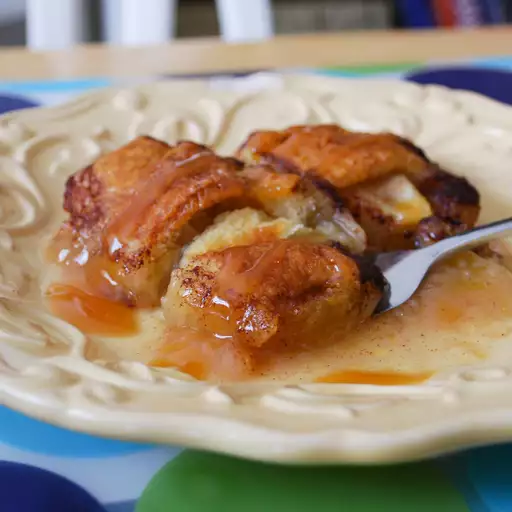

Mountain Apple Cobbler

Description
The final secret ingredient in this autumnal staple will leave you suprised! My aunt taught
me how to make this delicious dessert about 10 years ago. Best served hot with a scoop of
vanilla ice cream.
Ingredients
- 2 8oz cans of cresent rolls
- 2 large Granny Smith apples -- peeled, cored, cut into 8 slices each
- 1 cup butter, melted
- 1 1/2 cups of granulated sugar
- 1 tablespoon ground sugar
- 1 12oz bottle of Mountain Dew
Instructions
- Preheat the oven to 350 degrees F. Grease a 9x13 inch baking pan.
- Unroll the cresent roll dough and seperate the sheets into indvidual triangles. Toss the apple
wedge in cinnamon. Then wrap the apple slice into a triangle of dough. Place them into the pan
seam side down.
- Mix the melted butter, sugar, and cinnamon in a bowl. Spoon evenly over the dough-wrapped
apple slices. Pour Mountain Dew over the rolls.
- Bake in the preheated oven until the top is browned. About 45-50 minutes.